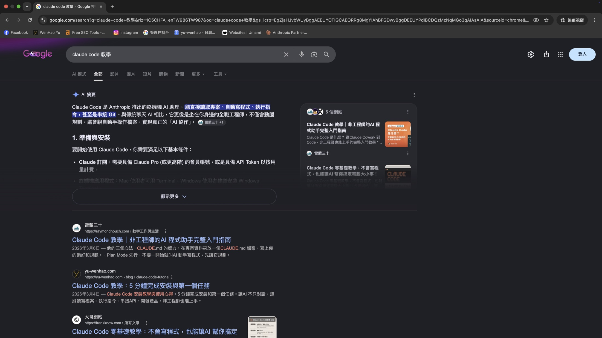
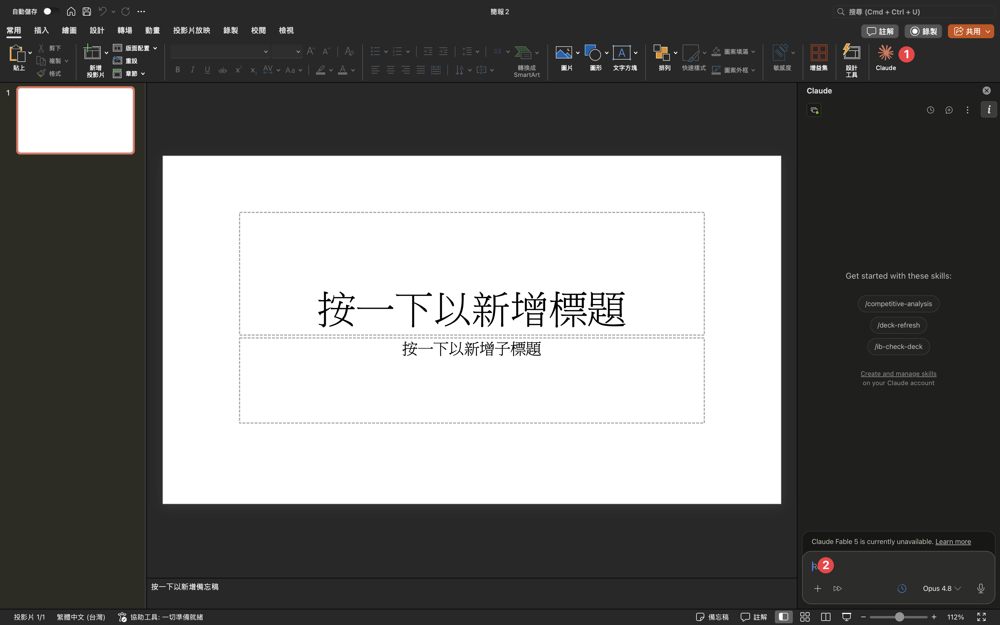
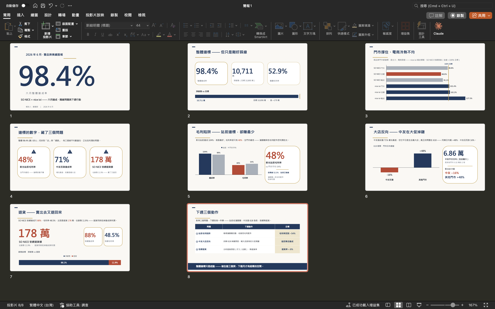

DAY 1 / 3BLOCK 0 · 開場
用 AI，把數據
變成一份報告。
變成一份報告。
SO NICE · AI 工作流導入 ｜ Day 1 / 3
講師 余文皓
匯流顧問有限公司
2026 / 06 / 17 · 中和
SO NICE · AI 工作流導入
BLOCK 0開場
把你最花時間的
那件事 ——交出去。
那件事 ——交出去。
開場 · 30 MIN
02
每週 · 現況同一件事
每週的同一件事 ——
你在當報表的搬運工。
你在當報表的搬運工。
報表落地
資料散在 5、6 個檔。
複製貼上、整併
清欄位、跑樞紐
算達成率、標異常
半天後
你才剛能開始「解讀」。
數字都對了 ——
但拿來想事情的時間，用完了。
但拿來想事情的時間，用完了。
「做週報、月報分析 —— 一天。」 「不同報表整併、樞紐分析 —— 約 3 小時。」 —— 你們問卷裡的原話。
03
BLOCK 0 · HOOK
QUOTE · 01
“
你不是不會分析 ——
是時間，都花在搬資料。
是時間，都花在搬資料。
04
每週 · 換個做法同一件事 · 一句話
同一件事 ——
這次你打一句話。
這次你打一句話。
~/sonice $ claude
> 把這 7 份報表整併，算各品牌達成率，
標出異常，再給我一段解讀
標出異常，再給我一段解讀
讀檔 (7) · 整併中… (4.2s)
✓ 7 張表併成 1 張（品牌 × 店櫃 × 品類）
✓ 達成率 + 毛利算好 —— 標了 4 個異常
✓ 趨勢 + 一段解讀草稿
3 分鐘後
它把數據算好、
攤在你面前。
攤在你面前。
它不幫你下結論。
它讓你解讀。
05
BLOCK 0 · HOOK
差別在哪機械的那段 · 交給它
機械的那段 ——
交給它。
交給它。
7 份報表
─── 變成 ───▶
整併好的一張
一堆數字
─── 變成 ───▶
達成率 + 毛利 + 標好的異常
「怎麼說」
─── 變成 ───▶
一段解讀草稿
解讀草稿
─── 變成 ───▶
一份主管簡報
你的時間 ── 留給看數字背後的事。
06
BLOCK 0 · INSIGHT
WHY ME為什麼是我帶你們做
不是來講理論 ——
是做過、剛交付完。
是做過、剛交付完。
✦
Claude Partner Network 成員
匯流顧問有限公司 · Anthropic 官方夥伴體系
✦
企業導入 · 剛交付
最近剛幫 STUDIO A 做完三天工作坊 —— 一樣零售品牌、一樣每天跟報表和門市數據打交道
✦
公開工作坊
Claude Code 實作班 —— 右邊這張，就是現場
✦
Claude Code 第一批使用者
用快一年、拿它做真實產品與生意


Claude Code 公開實作班 · 台中
07
BLOCK 0 · WHY ME
WHY ME · 不只我說公開搜尋 · 公開排名
搜尋「Claude Code 教學」——
前三名，有我。
前三名，有我。

Google 無痕視窗 · 搜尋「claude code 教學」· yu-wenhao.com 排第 2 —— 沒有個人化、就是公開排名
08
BLOCK 0 · WHY ME
輪到你30 秒 · 讓我認識你
開始之前 ——
30 秒，讓我認識你。
30 秒，讓我認識你。
01 你是誰
名字 · 部門
平常的工作大概在忙什麼。
02 用過 AI 嗎
哪些工具？
體驗怎麼樣？
體驗怎麼樣？
ChatGPT · Claude · 其他 —— 還沒真的用過也沒關係。
03 現在的程度
給自己打個感覺
新手 · 偶爾用 · 蠻熟 —— 今天是期待，還是有點怕？
今天這班 · 10 位
李總
總經理
Elaine
線上營運
家喻
品牌行銷
Elena
業務管理
集鍵
OMO 蝦皮
Karen
會員運營
靖宜
智能倉儲
綺蓮
SONICE PM
禮嘉
線上營運
恩偉
資訊
你們要什麼，我問卷收過了、等下就攤開 —— 現在先讓我認得人、抓全班的節奏。
09
BLOCK 0 · 認識你
你們寫的2026-05-28 學員問卷 · 7 人 · 原話
7 份問卷，原話攤開。
「做週報、月報分析 —— 一天。」
「下廣告，每天約 3-4 小時。」
「調廣告 —— 每天約 1.5-2 小時。」
「產出報表並分析大問題。」
「分類頁報表分析，哪些分類頁可加強、給投放企劃建議。」
「提供素材給廣告代操。」
「不同報表整併、清整欄位值、樞紐分析 —— 約 3 小時。」
「用 Excel 計算所有廣告、業績等週月報數據。」
「週月報數據結果，用文字敘述原因及解決方法。」
「計算好的數據，須用 PPT 呈現，1-2 小時。」
「業績表現＆廣告成效追蹤，每週 7-8 小時。」
「數據洞察 —— 沒有整合性動態儀表板，得到處挖。」
「目標業績卡 —— 預估工時 5 小時。」
「雙品牌週報，預估工時 4 小時。」
「雙品牌月報 —— 加人員、店櫃成效，3 小時。」
「業績彙整、分析及導出 —— 輸入需求即可匯出。」
「進撤櫃流程、新展店／特拍曝光 —— 推播、簡訊頻率。」
「Call 客名單追蹤成效。」
「彙整門市店務與工作流程、優化建模板。」
「贈品都無法一次到位，需隨時確認到櫃及贈送狀態。」
「活動成效追蹤及分析（購物金、滿額贈）。」
「不知道前一款同性質商品在哪裡。」
「排貨落版 —— 不知道底層邏輯是否被驗證、好不好賣。」
「商品覆盤時間最久 —— 資料匯整 1-2 天，再加 3 天統整與分析。」
「商品銷售分析 —— 預測什麼時候、會有什麼需求。」
「手機拍照上傳，自動編碼，定時產出採購報表 Excel。」
「提供該轉出＆轉入的門市清單。」
「跨部門報表 —— 銷售數據並跑出相對應圖片。」
「企劃素材生成（平面、影片）。」
「流量品包裝企劃 —— 找好素材、找創意。」
「我給模版與內容，自動幫我完成完整簡報。」
「產製 20 則以上內容，跨平台複製貼上，約 8-16 小時。」
「每一則文案用詞不能很雷同。」
「會員分眾溝通設計、策略討論。」
「執行中的劇本須定期更換圖文內容，約 6 小時。」
「大檔活動：特賣、母親節等劇本規劃與設定，約 16 小時。」
「賣場優化 —— 調整賣場圖、商品標題、商品分類。」
「平台操作 —— 折扣價、優惠券、活動提報設定。」
「官網 SEO 文章產製，每周約 5 小時。」
「AI SEO（與 91APP 合作）、Insider Onsite 功能規劃。」
「分析我們與競爭對手的差異 —— 熱銷商品與買的是誰。」
「希望 AI 針對蝦皮平台給予具體的操作建議。」
「一套李總專用運營數據的資訊模版，回答例行會議上需要知道的資訊。」
「統整跟催會議代辦。」
「理解各部門流程卡點，溝通調整。」
「定期通知負責人應做甚麼事、回傳甚麼資料。」
「詢問加班制度，就能搜尋到最新版本的說明。」
「跨部門工作進度追蹤＋截止日提醒。」
「門市業績預估、指標判斷 —— 連動活動方案與廣宣成效。」
「門市獎勵制度、目標訂定及成效檢核。」
「審批內容及進度無法同步更新，需要反覆確認。」
「讓部門同事具備分析能力，清楚知道從哪些角度思考。」
10
BLOCK 0 · 需求共識
能幫到哪52 個需求 · 老實分三類
52 個需求 —— 你學會就能做、課後自己長、哪些先不碰。
🟢 A · 三天課堂學會、能帶走的能力
課堂練會 · 回去立刻能用
報表整併 + 解讀
數據 → 主管簡報
報表 Skill 化（每週重跑）
商品決策 Skill（找前款 + 需求預判）
蝦皮 / 文案 / 競品分析
工作管理 Skill（掛進開工）
🟡 B · 課堂先做出來，你接著長
不是從零 —— 課堂跑出能動的版本
採購工具
能跑的 MVP▸長成完整 App
部門儀表板
一個做好的範例▸改成你部門版
調轉貨地圖
課堂做出可跑範例▸微調你的資料 / 規則
李總儀表板
課堂搭出達成紅綠燈▸接真實資料微調
🔴 C · 這次先不碰
原因不同 —— 四種
不是 AI 的活
平台後台代操（蝦皮 / 91APP 設價·上架）
對方沒開放
CRM 打入（Insider / OC）· AI SEO 串接 · 競品爬蟲
生態系還沒有
real 商品圖 · 影片 / Reels 生成
本來是人的事
人際協調 · 制度訂定 · 實體調貨
A 帶走會用的能力 · B 課堂做雛形、你接著微調 · C 我們不誇大、先說清楚
11
BLOCK 0 · 需求共識
需求總覽2026-05-28 學員問卷 · 7 人填答
7 個人、5 類需求 —— 底層是同一條工作流。
最大公約數
報表整併 ＋ 數據解讀
Elaine · Elena · 集鍵 · Karen · 靖宜
週／月報多表整併、清欄位、樞紐
不只做表 —— 標異常、給操作建議
用匯出報表給建議 —— 蝦皮、分類頁
內容生成
素材 · 簡報 · 文案
家喻 · Karen
企劃素材（平面）
模板＋內容 → 整份簡報
CRM 劇本文案 20+ 則不重複
官網 SEO 文章
商品資料
商品 · 採購 · 倉儲
靖宜 · 家喻
拍照上傳 → 編碼 → 採購報表
調轉貨建議（轉出／轉入門市）
排貨落版找同性質前款
流程管理
跟催 · 會議 · 文件
綺蓮 · Elena
會議記錄 → 待辦 → 追蹤完成
流程定期通知＋截止日提醒
文件版本查核（問了回最新版）
策略分析
運營 · 競品 · 預測
家喻 · Karen
李總例會運營數據模板
競品差異（會員／商品／受眾）
商品銷售需求預測
5 類需求，底層是同一條工作流：讀多檔 → 整併 → 解讀 → 產報告 —— 三天裡，你把它做成報告、包成 Skill、長成工具。
12
BLOCK 0 · 需求共識
三天怎麼教一條升級線 · 自主程度一天比一天高
三天 —— 做一份報告、包成 Skill、做出真工具。
D1 · 6/17
做出第一份主管報告
📋 課程內容（我們一起做）
① 建立 AI 工作環境
教 AI 認得你（部門 · 術語）
用一句話就能叫 AI 做事
讓 AI 讀你的行事曆和信
② 用 AI 做數據分析
多份報表合併、清整欄位
算達成率、標異常、看趨勢
AI 幫你解讀 + 給建議
③ 數據 → 主管簡報
一鍵生成給主管看的簡報
調整不同對象（李總 / 部門）
✓ 接住你的需求 → 帶走
報表整併 + 解讀 · 數據 → 主管簡報
一份 AI 主管簡報 + 讀數據解讀的能力
D2 · 6/29
變成可重複的 Skill
📋 課程內容（我們一起做）
① 學會 AI 單項能力
蝦皮數據 · 文案生成 · 競品分析
② 把流程包成 Skill
一句話重跑整套
報表 / 商品決策都能包
③ 工作管理 + 知識管理
會議待辦 · 跟催 · 提醒
查資料 · 存進你的知識庫
✓ 接住你的需求 → 帶走
報表 / 商品決策 Skill · 競品 · 工作管理
你自己的 Skill 庫
D3 · 6/30
做出別人也能用的工具
📋 課程內容（我們一起做）
① 用講的、AI 幫你寫程式
不用會寫 code
② 做出能上線的工具
別人打開就能用
③ 各部門做自己的工具
調轉貨地圖 · 達成儀表板
採購小工具…
✓ 接住你的需求 → 帶走
調轉貨地圖 · 李總儀表板 · 部門工具
能跑的工具 + 自己做工具的手藝
報告（D1）→ 可重複的 Skill（D2）→ 真工具（D3） ｜ 你能自己做的，一天比一天多
13
BLOCK 0 · 需求共識
今天怎麼走13:30 – 18:10 · 一路動手
今天 —— 四站，路口收在一份簡報。
STATION 1建好你的 AI 工作環境
讓 AI 認得你、用一句話叫它做事
STATION 2讓 AI 幫你做第一件事
查行事曆、草擬一封信 —— 暖個身
☕ 休息一下
STATION 3用 AI 做數據分析 ★
多檔整併 → 達成率 / 異常 / 趨勢 / 解讀
☕ 休息一下
STATION 4數據 → 一份主管簡報 ★
一句話，把分析變成給李總的簡報
下課 · 派作業
下課帶走
每一站都動手。
下課的時候，你電腦裡會有 ——
一份 AI 做的主管簡報
一套「讀數據 → 解讀」的流程
建好、認得你的 AI 工作環境
14
BLOCK 0 · 今天怎麼走
開始之前三件事
三件事，講完我們開始。
01
卡住就舉手。
安裝、權限、中文 —— 都會卡。
別自己默默 google 30 分鐘，舉手我過去、三分鐘排掉。
別自己默默 google 30 分鐘，舉手我過去、三分鐘排掉。
02
動手才算數。
今天大半時間，是你在做、不是看我做。
跟著打、跟著跑，手感才帶得回去。
跟著打、跟著跑，手感才帶得回去。
03
帶走的是能力。
範例是骨架 —— 回去用你自己的報表，
長成你的。今天不是要你複製我。
長成你的。今天不是要你複製我。
三件事 —— 我們開始。
15
BLOCK 0 · 約定
BLOCK 1你的工具
你今天用的
工具是什麼？
工具是什麼？
Claude 不只一個產品 ——
是一個生態系。
是一個生態系。
16
BLOCK 1 · 工作環境 + FLUX
你在哪跟它講話越來越多地方
Claude 給你 ——
越來越多地方跟它對話。
越來越多地方跟它對話。
Claude API
DEVELOPER · 開發者
工程師串接用、今天不用。
知道有這東西就好。
知道有這東西就好。
GA · 2023 / 03
Claude.ai
BROWSER · 瀏覽器
開分頁、跟它聊天。
跟 ChatGPT 同一類。
跟 ChatGPT 同一類。
GA · 2023 / 07
★ 今天主角
Claude Code
LOCAL · 本機
跟你的檔案在同一空間 ——
能讀、能寫、能跑腳本。
能讀、能寫、能跑腳本。
GA · 2025 / 05
Claude Cowork
DESKTOP · 桌面 App
知識工作者用的桌面版。
跟 Code 像、長相不同。
跟 Code 像、長相不同。
GA · 2026 / 04
Claude Design
VISUAL · 設計
用對話做簡報、設計稿、原型 ——
還能接給 Code 繼續。
還能接給 Code 繼續。
2026 / 04 · 研究預覽
看推出時間 —— 光 2026 / 04 就多了 Cowork + Design 兩個入口，這條產品線還在長。
17
BLOCK 1 · L1 HOST 平台
WHY CODE第一個分界
為什麼
不用 Claude.ai？
不用 Claude.ai？
在瀏覽器
CLAUDE.AI
✗ 讀不到你電腦的報表檔案
✗ 存不了整理好的內容
✗ 只能在分頁裡跟你講話
這是
第一個分界
第一個分界
在你電腦上
CLAUDE CODE
✓ 跟你的檔案在同一空間
✓ 能讀、能寫、能跑腳本
✓ 有 CLAUDE.md 記得你是誰
18
BLOCK 1 · WHY CODE
THE COWORK QUESTION第二個分界
那 Cowork 呢？
CLAUDE COWORK
桌面 App · 給知識工作者
2026 / 04 正式上線。
跟 Code 一樣 —— 也在你電腦上、也能讀寫檔案。
跟 Code 一樣 —— 也在你電腦上、也能讀寫檔案。
Cowork 也在你電腦上、也能讀寫檔案 ——那為什麼不用 Cowork？
19
BLOCK 1 · COWORK?
SHAPE形狀論
差別在形狀。
COWORK
有形狀
桌面 App · GUI · 預設工作流 ——
Anthropic 想好的形狀。
Anthropic 想好的形狀。
vs
CODE
沒形狀
Terminal · 對話框 · 讀寫檔案 ——
裝得進任何形狀。
裝得進任何形狀。
Cowork 有形狀。 Code 沒形狀。
20
BLOCK 1 · SHAPE
FITS ANY SHAPE萬用
沒形狀、
代表它裝得進任何形狀。
代表它裝得進任何形狀。
多份報表整併→可以
算各品牌達成率→可以
標出業績異常→可以
數據寫成一段解讀→可以
整理跨部門會議記錄→可以
排這週活動行事曆→可以
草擬給廠商的信→可以
做競品比較→可以
找前一款同性質商品→可以
把分析做成主管簡報→可以
寫每日工作回顧→可以
⋯⋯→都可以
一個工具、你的事都能做。
21
BLOCK 1 · FITS ANY SHAPE
YOUR CODESHAPE
這三天跑完 ——
你電腦上會有一個 Code。
它的形狀、
長得像你的工作。
長得像你的工作。
22
BLOCK 1 · YOUR CODE
YOUR WORKBENCH環境 · 4 個工具
今天的
工作環境。
工作環境。
4 個工具 · 先把名字對齊。
對齊名字 + 位置 —— 不囉嗦、進 hands-on。
▸ VS CODE
/ TERMINAL
/ OBSIDIAN
/ MARKDOWN
23
BLOCK 1 · ENVIRONMENT
THE WORKSPACEVS CODE
Claude Code 跑在終端機。
我們今天用 VS Code 開。
我們今天用 VS Code 開。
FLUX-standard-sonice — Visual Studio Code
1FLUX-STANDARD-SONICE
📁 Inbox
📁 Cockpit
📁 Efforts
📁 Calendar
📁 Atlas
📁 Guides
📁 Templates
📄 CLAUDE.md
2# Cockpit / Weekly-Commitment.md
# 本週
- [ ] 雙品牌 6 月月報
- [ ] 母親節活動成效追蹤
- [x] 上週業績回顧
3▾ TERMINAL
~/FLUX-standard-sonice $ claude
早安。今天要做什麼？
>
1
File Tree
檔案總管 · 你的 Vault 攤在這
2
編輯器
看 Claude 改 · 你自己也改
3
Terminal ★ CLAUDE CODE 跑在這
跟 Claude 對話的入口
Claude Code 跑在終端機裡 ——
VS Code 把它跟你的檔案 + 編輯器擺在一起。
VS Code 把它跟你的檔案 + 編輯器擺在一起。
24
BLOCK 1 · THE HOST
SETUP一次設定 · 之後不用做
先打開 vault ——
Claude 才認得 FLUX。
Claude 才認得 FLUX。
1
打開 VS Code
從桌面捷徑或開始功能表開
2
File → Open Folder...
或按 Ctrl+K Ctrl+O
3
選你的 FLUX-standard-sonice/
點 Open → 左側出現你的 vault tree

① 滑鼠派
② 鍵盤派
Claude 讀「你打開的資料夾」的 CLAUDE.md ——
所以動手前、vault 一定要先打開。
所以動手前、vault 一定要先打開。
25
BLOCK 1 · OPEN YOUR VAULT
THE LENSOBSIDIAN
Obsidian 是看 Vault 的窗。

Obsidian = Vault 的窗
— 免費、跨平台、可離線
— Wikilink 互連、graph view 視覺化
— 你看 Vault 就用它
同一份 .md 檔 · 兩個視角
— Claude 在 Terminal 改、你在 Obsidian 看
— 中間不轉檔、即時同步
— 下一頁講 Markdown 格式本身
26
BLOCK 1 · THE LENS
THE FORMATMARKDOWN · 統一格式
那 Markdown 是什麼？
—— 所有檔案的統一格式。
—— 所有檔案的統一格式。
你打的 —— 純文字 + 幾個符號
# 本週
**主要任務**
- 雙品牌 6 月月報
- 母親節活動成效追蹤
- 回廠商贈品確認信
Ctrl ⇧ V
→
渲染
Obsidian 顯示的 —— 漂亮排版
本週
主要任務
• 雙品牌 6 月月報
• 母親節活動成效追蹤
• 回廠商贈品確認信
• 母親節活動成效追蹤
• 回廠商贈品確認信
AI 看得懂 · 不綁任何工具 · 100 年後還打得開。 同一份 .md、Claude 在 Terminal 寫、你在 Obsidian 看。
27
BLOCK 1 · MARKDOWN
INTERFACE選你習慣的入口
兩種方式叫 Claude ——
選你習慣的。
選你習慣的。
FLUX-standard-sonice — Visual Studio Code
EXPLORER
📁 Inbox
📁 Cockpit
📁 Efforts
📁 Calendar
📁 Atlas
📁 Guides
📁 Templates
📄 CLAUDE.md
# Cockpit / Weekly-Commitment.md
# 本週
- [ ] 雙品牌 6 月月報
- [ ] 母親節活動成效追蹤
1▾ TERMINAL · 命令列入口
~/FLUX-standard-sonice $ claude
早安。今天要做什麼？
>
2◆ CLAUDE · 圖形介面入口
幫我看這週要追什麼
好的、我讀了你的 Weekly-Commitment ——
本週 3 件、「母親節活動成效追蹤」還沒開始。
本週 3 件、「母親節活動成效追蹤」還沒開始。
▌ 輸入訊息…
1
Terminal · 命令列
Ctrl J 開終端機、打 claude —— 純打字對話
2
Chat Panel · 圖形介面
點側邊欄 Claude icon 或 Ctrl Esc —— 像聊天視窗
兩個都在同一個 VS Code 裡 ——
選你習慣的 panel、跟的是同一個 Claude。
選你習慣的 panel、跟的是同一個 Claude。
兩種叫法、同一個 Claude ——
下一步動手時、選你習慣的一個就好。
下一步動手時、選你習慣的一個就好。
28
BLOCK 1 · TWO WAYS TO INVOKE
CLAUDE.mdNO MEMORY
Claude Code 沒有記憶。
?
PROBLEM · 問題
01每次打 claude = 全新對話
02教過的事 · 它不記得
03昨天的設定 · 今天從頭問
是它的設計、不是 bug。
靠什麼解決
↓
✓
SOLUTION · 解法
CLAUDE.md
01每次開機第一件事就讀它
02寫一次 · 它每次都記得
03你的 FLUX vault 裡 · 已經有一份
Claude Code 的使用說明書。
29
BLOCK 1 · NO MEMORY
THE TRICK為什麼 Claude 認得你
Claude 沒記憶 ——
就像《我的失憶女友》。
就像《我的失憶女友》。
電影裡她每天醒來都忘了 —— 靠把要記得的事寫進日記、起床先讀一遍、才能繼續生活。
Claude Code 一樣 —— 那本日記叫 CLAUDE.md。
Claude Code 一樣 —— 那本日記叫 CLAUDE.md。
✗ 沒 CLAUDE.md
USER
幫我把這份數據整理成報告
CLAUDE
要給誰看？什麼格式？
USER
給李總看、我是業務部的
CLAUDE
了解、但下次新對話我又會忘
每次對話都從零教 = 浪費 5 分鐘
→
✓ 有 CLAUDE.md
USER
幫我把這份數據整理成報告
CLAUDE
（讀完 CLAUDE.md）好的、用給李總的主管格式、重點放達成率和異常。
USER
明天開新對話也記得？
CLAUDE
會、那是我的日記、每次開工先讀。
CLAUDE.md = Claude 的日記
30
BLOCK 1 · THE TRICK
CLAUDE.md裡面長這樣
打開 CLAUDE.md ——
就是一份說明書。
就是一份說明書。
CLAUDE.md — FLUX-standard-sonice
# FLUX Vault — AI 指令
你是使用者的個人助手、協助管理 FLUX 系統。
## 你是誰
- 稱呼：陳雅婷
- SO NICE 職位：業務部管理組
- 直屬主管：李總
## 基本行為
- 用繁體中文回覆（台灣用語）
- 建新檔先讀 Templates/ 模板
## 溝通風格
1. 先給結論、再給理由（倒金字塔）
2. 最多給 2 個選項
⋯⋯
你是誰
填一次 —— 它記得你的稱呼 / 部門 / 主管
基本行為
講繁中、怎麼建檔 —— 你的規矩
溝通風格
它要怎麼跟你講話 —— 你自己定
純文字、你看得懂也改得動 —— 想調就直接改這份檔。
31
BLOCK 1 · CLAUDE.md INSIDE
HANDS-ON ①讓 CLAUDE 認識你
讓 Claude 認識你 ——
一句話的事。
一句話的事。
1
打開 Claude Code
用你習慣的方式 —— Ctrl + J 開 terminal 打 claude、或點側邊 Claude icon
2
跟 Claude 說（口述 · 不用打 Markdown）
把稱呼 · 部門/職位 · 直屬主管講給它聽 —— 照下面那段、填你的資料就好。
3
看 Claude 跑 3 件事
(a) 問你要不要改檔 — 按 1 同意（第一次都選 1、看它在做什麼）
(b) 編輯 CLAUDE.md 寫進「你是誰」欄
(c) 回答時用你剛填的資訊
(b) 編輯 CLAUDE.md 寫進「你是誰」欄
(c) 回答時用你剛填的資訊
> 我叫 陳雅婷、SO NICE 業務部管理組、主管是李總。
請更新 CLAUDE.md。
⏺ Edit(CLAUDE.md)
⎿ 想新增「你是誰」: 陳雅婷 / 業務部管理組 / 李總 ...
? Do you want to make this edit to CLAUDE.md?
❯ 1. Yes ← 第一次選 1、看 Claude 在做什麼 ★
2. Yes, and don't ask again this session ← 整 session 不再問（趕時間時用）
3. No, and tell Claude what to do differently ← 想改方向（讓它重新規劃）
⏺ Edit(CLAUDE.md) ✓
⏺ 好的 雅婷、我認識你了 ✓
複製這段 · 填你的資料 · 貼進 Claude
> 我叫 {你的稱呼}、SO NICE {你的部門 / 職位}、直屬主管是 {主管}。
請更新 CLAUDE.md，並跟我確認你認得我了。
Claude 現在認識你了 —— 之後都會用你的工作脈絡回答你。
32
BLOCK 1 · LET CLAUDE KNOW YOU
THE REVEALNAMING · THE WORKSPACE
你已經讓它認得你了 ——
而這整套 AI Workspace，我命名為 ——
而這整套 AI Workspace，我命名為 ——
FLUX
給你的工作系統。
FOCUS · LEARN · UPGRADE · EXECUTE
33
BLOCK 1 · THE REVEAL
THE LOOP4 LETTERS · 1 CYCLE
一個循環、不是清單。
F
Focus
專注目標
早上開工、聚焦今天 3 件事
L
Learn
連結知識
把學到的、存進 Atlas（D2）
U
Upgrade
迭代升級
調 CLAUDE.md · 包 Skill · 助理越用越懂你
X
eXecute
每日執行
隔天開工、循環接起來
設目標 →
累積知識 →
升級系統 →
執行 ↻
重新校準
34
BLOCK 1 · THE LOOP
THREE LAYERSFLUX 有層次
FLUX 不是平鋪的、
是有層次的。
是有層次的。
UPPER
場景
你的工作流
跑開工 · 整理報表 · 數據解讀 · 主管簡報 · 每日回顧 ⋯⋯
↑ 疊在它上面 ↑
MIDDLE
原子能力
觸發語 · Skill
「開工」「整理這份報表」「算達成率」「做主管簡報」⋯⋯
↑ 疊在它上面 ↑
FOUNDATION
底座
FLUX Vault
資料夾結構（Inbox / Cockpit / Efforts / Calendar / Atlas / Guides / Templates）+ CLAUDE.md
原則：底座沒打好、上面都會歪。
你的底座已就位 —— AI 從這帶你前進。
FLUX Vault + CLAUDE.md 已配置 · 今天把 UPPER + MIDDLE 兩層疊上去
35
BLOCK 1 · LAYERS
THE METHODOLOGYPARA + 卡片盒 + 12WY
FLUX 站在三套方法論上 ——
管行動 + 管知識 + 管執行。
管行動 + 管知識 + 管執行。
PARA · 管行動

Tiago Forte《打造第二大腦》
P · Projects — 有 deadline
A · Areas — 持續經營
R · Resources — 主題參考
A · Archive — 沉睡舊案
→ Efforts/ 資料夾
日常動 P + A · R / Archive 之後再分
卡片盒筆記 · 管知識

Luhmann · Sönke Ahrens《卡片盒筆記》Zettelkasten
· Dots — 一卡一概念
· Sources — 書 / 影片 / Link
· Wikilink — 卡片互相連結
· Maps — 主題索引（把相關 Dots 串起來）
→ Atlas/ · LYT (Nick Milo) Obsidian 實現
D2 知識管理深教 · 你會建第一張 Dot 卡
12 週年 · 管執行

Brian Moran《12週做完一年工作・實踐版》
· Vision — 3 年願景
· 12-week Goals — 這季 1-3 件大事
· Weekly Commit — 本週推進
· Daily Execution — 今天 3 件事
→ Cockpit/ 資料夾
今天動 Daily（開工）· 週 / 季 留 D2
行動 + 知識 + 執行 三方分開存、wikilink 串起來 ——
就成了一個會自己流的工作系統。
就成了一個會自己流的工作系統。
36
BLOCK 1 · THE METHODOLOGY
THE VAULT你電腦上的樣子
打開資料夾 ——
你的 Vault 長這樣。
你的 Vault 長這樣。
~/FLUX-standard-sonice
FLUX-standard-sonice/
├── CLAUDE.md ★
├── Cockpit/ ★
├── Atlas/
├── Efforts/ ★
├── Inbox/ ★
├── Calendar/
├── Guides/
└── Templates/
就是一個資料夾、
放在你電腦上。
放在你電腦上。
沒有雲端、沒有帳號、沒有訂閱。
Claude 讀寫的、就是這幾個資料夾裡的純文字檔。
Claude 讀寫的、就是這幾個資料夾裡的純文字檔。
★ 標星的 = 今天會動到的
37
BLOCK 1 · VAULT TREE
THE VAULT7 + 1 · STRUCTURE
Vault = 你助理的記憶體。
7 個資料夾 + 1 份說明書。
7 個資料夾 + 1 份說明書。
Inbox/
想法快速捕捉
未分類進這、之後再整理
Cockpit/
控制中心
週 / 日 commitment ·「開工」跑這裡
★ 今天動這裡
Efforts/
Projects + Areas
對應 PARA 框架
★ D2 工作管理
Calendar/
個人日記 + 時間軸
Days / Records
Atlas/
知識卡 + Sources
對應 LYT 框架（Dots / MOC）
★ D2 知識管理
Guides/
操作手冊 · SOP
常用流程說明
Templates/
模板
已設好初版 · 進階用
CLAUDE.md
助理使用說明書
不是資料夾 · root 一個檔
今天動 Cockpit（開工）· Atlas / Efforts 留 D2 · 其他先看過
38
BLOCK 1 · THE VAULT
你的 FLUX輪到你的版本
FLUX 你看過 ——
現在輪到你的版本。
現在輪到你的版本。
建你的 Area、Project、本週清單 ——
跑你的第一次開工。
跑你的第一次開工。
39
BLOCK 1 · 你的 FLUX
你的 FLUX同一個視窗 · 這次亮 Efforts
這個視窗你開過 ——
這次放大看 Efforts。
這次放大看 Efforts。
FLUX-standard-sonice — Visual Studio Code
FLUX-STANDARD-SONICE
📁 Inbox
📁 Cockpit
📂 Efforts
📁 Areas 持續經營
📁 Projects 有結束日
📄 OVERVIEW.md 總覽
📁 Calendar
📁 Atlas
📁 Guides
📁 Templates
📄 CLAUDE.md
E
你所有在做的事
部門職能 + 專案 —— 都歸 Efforts
Cockpit 放你的本週、Efforts 放你的 Area + Project。先放大看 Efforts。
點開 Efforts —— 兩種：持續的 Area、有結束日的 Project。等下分清楚。
同一個 vault、同一個視窗 —— 你的事，分門別類住一起。
40
BLOCK 1 · Efforts 在 Vault
你的 FLUX它的血統
你的 Efforts 不是我發明的 ——
是 第二大腦。
是 第二大腦。
《打造第二大腦》
Tiago Forte · Building a Second Brain
把腦袋裡的東西 存到 vault 外面 —— 需要時叫得出來、不靠記。
· 核心：一顆 外接大腦、知識和行動都存得下
· PARA = 它的 分類法：管行動的 Projects / Areas / Archive → Efforts/；參考知識的 Resources → Atlas/（我們改用卡片盒方法論做）
你等下建的每個 Area / Project —— 就是你第二大腦的一個抽屜。
41
BLOCK 1 · 第二大腦
PARA兩種 Effort
兩種要分清楚 ——
你的 Area、你的 Project。
你的 Area、你的 Project。
∞
Area
沒結束日 · 你的職能、長期經營
01業績與數據分析
02數位行銷／廣告投放
03商品企劃
04競品與市場研究
05跨部門協作
沒結束日 → Area
這件事
有結束日
嗎？
有結束日
嗎？
⚑
Project
有結束日 · 一次性成果、做完就結案
016 月雙品牌月報（6/30）
02父親節大檔活動
03Q3 排貨落版規劃
04蝦皮賣場優化專案
05母親節活動成效檢討
有結束日（即使很遠）→ Project
不確定 → 預設選 Area（之後隨時可以改）。
42
BLOCK 1 · PARA · 兩種 Effort
換你把工作交給 Claude 整理
換你 ——
兩步，把你的工作交給 Claude 整理。
兩步，把你的工作交給 Claude 整理。
STEP 01
跟 Claude 對談
討論 + 建立結構
講你在忙什麼 → Claude 幫你分 Area / Project、建好資料夾。
STEP 02
用你本機的檔案
複製 + 整理
把你電腦裡的工作檔，複製進對應資料夾（原檔留著）。
先想 30 秒
你這週手上有哪些事？—— 不用分類、想不清楚沒關係，等下 Claude 會問你、幫你分。
43
BLOCK 1 · 兩步整理你的工作
HANDS-ON ①跟 Claude 討論 + 建立
第一步 ——
跟 Claude 討論 + 建立。
跟 Claude 討論 + 建立。
複製這段 · 貼進 Claude · enter
> 我想用你整理我的工作。先別急著建、我們先討論 ——
① 根據我的角色，先猜我的工作 Area（→ Area）、讓我確認補漏。
② 再問我最近有截止日的專案（→ Project）、deadline 何時。
③ 問我要不要加 個人 Area（健康/家庭/學習…）—— 想加再加。
歸成我的 Area + 1-2 個 Project 給我確認 → 同意後建資料夾 + README。
CLAUDE 會這樣陪你跑
猜你的 Area（工作＋可選個人）→問專案 + deadline→你確認→建好
44
BLOCK 1 · HANDS-ON① · 討論 + 建立
TIMER ①跟 CLAUDE 討論 + 建立 · ~8 MIN
動手 ~8 分鐘 ——
跟 Claude 討論、建好結構。
跟 Claude 討論、建好結構。
討論 + 建立
08:00
Claude 問你 → 提案 Area / Project → 你確認 → 它建好資料夾。
卡住、或它分得怪怪的 —— 舉手，講師逐個巡場。
卡住、或它分得怪怪的 —— 舉手，講師逐個巡場。
45
BLOCK 1 · TIMER① · 討論 + 建立
HANDS-ON ②把你的檔案複製進去
第二步 ——
把你電腦裡的工作檔複製進去。
把你電腦裡的工作檔複製進去。
先拿到資料夾路徑
在檔案總管找到你的工作資料夾 →
右鍵 →「複製路徑」
右鍵 →「複製路徑」
Win10 要先按住 Shift 再右鍵
貼進右邊取代 {路徑}。多個資料夾就一行貼一個 —— 先給最主要的 1-2 個。
複製這段 · 換上路徑 · 貼進 Claude
> 我的工作檔案在這些資料夾（一個或多個、一行一個）：
{貼上你複製的路徑}
請讀裡面的檔案，看每份像哪個 Area / Project，複製（原檔留著）到對應資料夾。
不確定的先問我。整理完更新 README、回報複製到哪。
放心
原檔不會動、只複製一份進 vault。Claude 不確定的會先問你 —— 卡住舉手。
46
BLOCK 1 · HANDS-ON② · 複製 + 整理
TIMER ②複製 + 整理 · ~8 MIN
動手 ~8 分鐘 ——
複製檔案、讓 Claude 整理。
複製檔案、讓 Claude 整理。
複製 + 整理
08:00
複製路徑 → 貼 prompt → Claude 把檔案分進對應 Area / Project。
找不到路徑、或它放錯 —— 舉手。
找不到路徑、或它放錯 —— 舉手。
47
BLOCK 1 · TIMER② · 複製 + 整理
做完了你剛建好的
剛剛那幾分鐘 ——
你的 Efforts 長這樣了。
你的 Efforts 長這樣了。
FLUX-standard-sonice — Visual Studio Code
EFFORTS
📂 Areas 持續經營
📁 業績與數據分析/ 📄 業績報表.xlsx · README.md
📁 競品與市場研究/
📁 跨部門協作/
📁 健康/ 個人 · 可選
📂 Projects 有結束日
📁 父親節大檔活動/ ⚑ deadline 8/8
📄 活動企劃.docx · README.md
✓
你只講了人話
分類、建資料夾、歸檔 —— Claude 做的
Area 是你長期的職能、Project 有 deadline —— 你的檔案各就各位了。
原檔都還在原地 —— 這裡是 Claude 複製進來、整理好的一份。
沒做完也沒關係 —— 結構在了，之後隨時叫 Claude 補。
48
BLOCK 1 · 你的 Efforts 長這樣
你的 FLUX同一個視窗 · 這次亮 Cockpit
Efforts 你建好了 ——
同個視窗，再看 Cockpit。
同個視窗，再看 Cockpit。
FLUX-standard-sonice — Visual Studio Code
FLUX-STANDARD-SONICE
📁 Inbox
📂 Cockpit
📄 Weekly-Commitment.md 本週 3-5 件
📁 Daily 今天 3 件
📁 Efforts
📁 Calendar
📁 Atlas
📁 Guides
📁 Templates
📄 CLAUDE.md
C
你的控制中心
本週 + 今天 —— 都從這開始
Cockpit = 你的本週。把這週要推進的 3-5 件寫在這 —— 做到打勾、沒做到記下為什麼。
節奏：每天「開工」執行、週五「結算本週」收尾。（結算本週 稍後教。）等下你親手寫一份本週。
開工、看今天做什麼 —— 都從 Cockpit 開始。
49
BLOCK 1 · Cockpit 在 Vault
HANDS-ON寫 Weekly Commitment
接下來 ——
寫本週的 3-5 件事。
寫本週的 3-5 件事。
複製這段 · 貼進 Claude · enter
> 我要排本週的 Weekly Commitment。
你已經知道我的 Area 和 Project 了。
幫我想本週最該推進的 3-5 件：
看哪個 Project deadline 近、哪些 Area 這週要顧，列出來問我。
我確認後，寫進 Cockpit/Weekly-Commitment.md。_
CLAUDE · 看你的 Efforts 提案
看你的 Project 和 Area —— 本週我建議這 4 件：
· 父親節大檔活動企劃（Project · 該起頭）
· 6 月業績月報（業績與數據分析 · 月底交）
· 競品價格更新（競品與市場研究）
· 跨部門贈品進度跟催
這樣 OK 嗎？要加要減跟我說 ——
確認我就寫進 Weekly-Commitment.md。
（週五「結算本週」稍後教。）_
HANDS-ON · 8 MIN · 跟 Claude 對話
01Claude 看你的 Area/Project 提案、你改
023-5 件就好、別貪心
03寫完 → 接著第一次跑「開工」
50
BLOCK 1 · HANDS-ON · 寫 Weekly Commitment
TIMER跟 CLAUDE · 8 MIN
動手 8 分鐘 ——
寫你的本週 3-5 件。
寫你的本週 3-5 件。
CLAUDE
08:00
3-5 件就好、別貪心 —— 講 deadline 讓 Claude 排優先序。
寫完接著第一次跑「開工」。
寫完接著第一次跑「開工」。
51
BLOCK 1 · TIMER · Claude 8 MIN
HANDS-ON跑你的開工
第一次跑 ——
看 Claude 幫你整合今天。
看 Claude 幫你整合今天。
YOU · 一句話
~/FLUX-standard-sonice $ claude
> 開工_
就這樣 ——
Claude 會自動讀 vault。
Claude 會自動讀 vault。
CLAUDE · 整合你的今天
早安 雅婷！今天是 6/17 週三。
你的 Areas（5 個）：
業績與數據分析 / 數位行銷 / 商品企劃 / 競品與市場研究 / 跨部門協作
Active Projects（1 個）：
父親節大檔活動（剩 ~2 個月）
本週 Weekly Commitment：
5 件、本週四前要交 6 月月報。
📌 今天 brief（3 件事）：
1. 完成 6 月雙品牌月報（週四到期、3 hr）
2. 跑蝦皮賣場優化清單（1 hr）
3. 父親節大檔活動企劃 outline（1.5 hr）
💡 建議時段：
09:30 - 12:30 月報
14:00 - 15:00 蝦皮清單
15:15 - 16:45 活動 outline
要我建立今天的 Daily Note 嗎？_
HANDS-ON · 8 MIN · 開工
01講「開工」、Claude 自動讀 vault
02看它怎麼整合 Area + 本週 → 今天 3 件事
03D1 暫不接釘釘/Outlook、B2 升級會接
52
BLOCK 1 · HANDS-ON · 跑開工
TIMER跟 CLAUDE · 5 MIN
動手 5 分鐘 ——
跑你的「開工」。
跑你的「開工」。
CLAUDE
05:00
講「開工」、Claude 自動讀 vault。
看它怎麼把 Area + 本週 整合成今天的 3 件事。
看它怎麼把 Area + 本週 整合成今天的 3 件事。
53
BLOCK 1 · TIMER · Claude 5 MIN
CONCEPT收工 · 開工的鏡像
下班前一句話 ——
跟 Claude 收尾今天。
跟 Claude 收尾今天。
早上 · 開工
> 開工
Claude 問你 ——
「今天要做什麼？」
「今天要做什麼？」
→ daily note · planning
下班前 · 收工
> 收工
Claude 問你 ——
「今天做了什麼？」
「今天做了什麼？」
→ daily note · review
為什麼現在不練
收工要在「一天結束」才有意義 —— 我們在今天最後（B5 收尾）真實下班那一刻一起跑一次。
54
BLOCK 1 · CONCEPT · 收工 = 開工的鏡像
CONCEPT週節奏 · 結算本週
每天有開工收工 ——
每週五，還有一次 「結算本週」。
每週五，還有一次 「結算本週」。
① 回顧本週
這週的 3-5 件 ——
哪些做完、哪些沒、為什麼。
哪些做完、哪些沒、為什麼。
② 排下週
下週的 3-5 件 ——
就是你剛剛做過的動作。
就是你剛剛做過的動作。
> 結算本週
週五下班前跟 Claude 說這句 —— 它帶你回顧本週、排下週。
D2 在 6/29
中間還有兩個週五（6/19、6/26）—— 你自己各跑一次，週清單才不會斷。回來上完整計分版。
55
BLOCK 1 · 週節奏 · 結算本週
BREAKBLOCK 1 完成 · 休息一下
系統建好了、它也認得你了 ——
休息 10 分鐘。
休息 10 分鐘。
BREAK
10:00
📣 休息時間小提醒
接下來你會陸續收到幾封課堂練習用的信、和一場「618 對焦會」會議邀請。這些都是今天模擬的、不是真的工作 —— 先別當真去執行，等下我們就拿它們來練 AI。
回來我們讓 Claude 真的動手 —— 接你的 釘釘行事曆 + 草擬一封 Outlook 信。
56
BREAK · 10 MIN → BLOCK 2
BLOCK 2暖場 win
換 Claude 真的動手 ——
你的 釘釘 + Outlook。
你的 釘釘 + Outlook。
課前都裝好了 —— 先暖場（看行程、建會、看信），
再用一場真的 618 對焦會，從會前一路跑到會後。
再用一場真的 618 對焦會，從會前一路跑到會後。
↳ 你 5/28 寫的需求
流程管理 · 跟催 · 會議 · 文件 綺蓮 · Elena
57
BLOCK 2 · 暖場 + 會議生命週期 · ~40 MIN
限時
03:00
HANDS-ON · 暖場看你本週行程
先來個簡單的 ——
看你本週的 釘釘行程。
看你本週的 釘釘行程。
複製這段 · 貼進 Claude · enter
> 看我本週行程，
幫我標哪些要準備、哪些到場就好_
不只列出來 —— 還幫你標好每場要做什麼。
再試：「今天有哪些會」「下週二下午找空檔」
再試：「今天有哪些會」「下週二下午找空檔」
CLAUDE · 讀你的釘釘
本週 8 個會，幫你標好要做什麼：
· 週一 10:00 雙品牌週會 要準備：上週業績數字
· 週三 14:00 父親節檔期對焦 要準備：企劃初版
· 週五 16:30 蝦皮營運週報 到場聽就好
週四整個下午沒會 —— 留給你做月報。
要我幫哪場先列準備清單嗎？_
✓
Claude 真的讀到你的釘釘了（不是 demo）—— 而且不只列出來，還幫你標好哪場要準備、哪場到場就好。
58
BLOCK 2 · HANDS-ON · 看釘釘行程
限時
05:00
HANDS-ON · 進階一點它也能建會議
不只看 ——
叫它幫你建一個會議。
叫它幫你建一個會議。
複製這段 · 換上你的 · 貼進 Claude
> 幫我建一個會議：
週四下午 2 點、30 分鐘
主題「6月月報對焦」、跟「{誰}」、線上
先建好讓我確認，邀請等我說再送。
CLAUDE · 建進你的釘釘
好的、我建好了（先存著、還沒送邀請）：
6月月報對焦
📅 週四 14:00–14:30
👤 跟 {誰}
📍 線上會議
要我把邀請送出去嗎？_
✓
它讀得到、也建得出來。邀請跟 email 一樣 —— Claude 先建、你按了才送；練習先約自己或一位同事，別誤發整個部門。
59
BLOCK 2 · HANDS-ON · 建會議
HANDS-ON · Carol（PM）多練一個 · 建今天要用的會
換 Carol —— 建今天 finale 要用的
618 對焦會、邀全員。
618 對焦會、邀全員。
Carol 你是 PM、建會議＋派人本來就是你的事。建好先不加人 → 確認 → 再邀 9 位（其他人收到邀請，等下會議手冊就撈這場）。
複製 · 貼進 Carol 的 Claude（釘釘 dws）· 完整 prompt
> 幫我在釘釘建一場會議：
標題：618 年中特賣活動 上線前對焦會
時間：6/17（三）18:00、60 分鐘
說明欄貼議程：
618 年中特賣 6/18（四）上線，上線前對焦。各線回報 ready／卡關／最後確認，拍板雙品牌（SO NICE＋nice ioi）業績目標與總預算。
各線負責：
・Elaine 廣告 — FB/IG/Google＋蝦皮 排程預算 6/17
・集鍵 蝦皮 — 賣場頁/優惠券 6/17、數據儀表板 6/18
・靖宜 倉儲 — 盤點 6/16、nice ioi 備貨 6/17、缺貨預警
・Elena 業績 — SO NICE＋nice ioi 目標卡、滿額贈到櫃 6/17
・家喻 商品 — 主視覺 banner、排貨落版 6/17
・Karen CRM — 推播文案、競品比價 6/16–17
・禮嘉 線上營運 — 官網 banner、結帳測試 6/17
・恩偉 資訊 — 網站/結帳壓測 6/16、standby 6/18
・綺蓮 PM — 進度跟催、會後 24h 發會議記錄
先建好不加人列給我確認；確認後從通訊錄加這 9 位：李總、Elaine、集鍵、靖宜、Elena、家喻、Karen、禮嘉、恩偉（組織人自動在內）。
60
BLOCK 2 · Carol 建會議 · 這場 finale 會用到
限時
03:00
HANDS-ON · Outlook看你最近的信
換 Email ——
先看你最近的信。
先看你最近的信。
複製這段 · 貼進 Claude · enter
> 看我最近 5 封信、
列寄件人 + 主旨 + 一句話摘要，
哪些要回、哪些看過就好
一句話 —— Claude 讀你真實收件匣、幫你分好。
CLAUDE · 讀你的 Outlook
最近 5 封：
· 廠商 A — 贈品到貨 要回：問幾號到櫃
· 李總 — 6月月報進度 要回：月底前能交？
· 蝦皮小編 — 活動素材 看過就好
· 行銷部 — 父親節文案 看過就好
· 系統 — 週報提醒 看過就好
2 封要回、3 封看過就好。
✓
它讀到你真實的收件匣了 —— 還幫你分好哪封要回。（要回某封？說「幫我回第 N 封」，它也會擬草稿、存草稿匣不寄。）
61
BLOCK 2 · HANDS-ON · Outlook 看信
BLOCK 2 · 場景把零件串成一場真實的會
剛剛是單點 —— 現在
一場會 從頭到尾跑一遍。
一場會 從頭到尾跑一遍。
情境
618 年中特賣活動，週四 6/18 上線。上線前一天今天下午，李總召集全員開「618 年中特賣活動 上線前對焦會」—— 各線回報 ready／卡關／最後確認。雙品牌（SO NICE ＋ nice ioi）＋ 蝦皮通路。
這場會的 10 個人 · 各自在忙什麼
| 人 | 負責 | 618 的事 | deadline |
|---|---|---|---|
| 李總 | 總經理 | 召集、聽各線回報、拍板目標／預算 | — |
| Elaine | 廣告投放 | 618 廣告排程＋預算（FB／IG／Google／蝦皮） | 6/17 |
| 家喻 | 商品企劃 | 主打品排貨落版＋活動 banner／視覺 | 6/16–17 |
| Elena | 業績·贈品 | 雙品牌業績目標卡＋滿額贈品到櫃 | 6/17 |
| 集鍵 | OMO 蝦皮 | 蝦皮賣場頁＋優惠券＋即時數據儀表 | 6/17–18 |
| Karen | CRM·競品 | 會員 CRM 推播文案＋競品比價 | 6/16–17 |
| 靖宜 | 倉儲·nice ioi | 庫存盤點＋nice ioi 備貨＋缺貨預警 | 6/16–17 |
| 綺蓮 | PM·跟催 | 整體進度跟催＋本會記錄／待辦追蹤 | 會後 24h |
| 禮嘉 | 線上營運 | 官網 618 banner＋結帳流程＋上線檢查 | 6/17 |
| 恩偉 | 資訊主管 | 網站／結帳壓測＋上線 standby | 6/16、6/18 |
▶
你也在這場會裡 —— 等下用 Claude，從會前一路跑到會後，抽出「你自己」要 follow-up 的事。
62
BLOCK 2 · 場景 · 618 對焦會
限時
10:00
會前 · WOW把一場會變成作戰手冊
會前 —— 先讓 Claude
幫你做一份會議手冊。
幫你做一份會議手冊。
複製 · 貼進 Claude · 中途跟它對齊一次
> 我要準備一場會，一步一步來：
① 釘釘找「618…上線前對焦會」（時間、與會人）
② Outlook 撈相關信 —— 一坨裡挑出 618 相關、排雜訊
→ 列出來源、跟我討論對齊
③ 對齊後寫手冊：目的／與會人+關注／背景／議程／我的行動
→ 標來源、查不到標「（缺）」、不要自己編
CLAUDE 撈 2 處 → 篩 → 整合一份
📅 釘釘 —— 那場會、時間、與會人
📧 Outlook —— 一坨信裡，挑出 618 相關那幾封
↓
📋 會議手冊
① 會議目的 ② 與會人 + 各自關注
③ 背景重點 ④ 議程／討論點
⑤ 我的行動（會前準備 · 會中提/問/爭取 · 會後 follow-up）
③ 背景重點 ④ 議程／討論點
⑤ 我的行動（會前準備 · 會中提/問/爭取 · 會後 follow-up）
✓
幾分鐘一份能帶進會議室的手冊 —— 你真實的會、信、專案。手冊裡的人名、nice ioi、專案都是「對的」 —— 記住這點，等下它會變成另一個東西。
63
BLOCK 2 · 會前 · 會議手冊
會後 · 場景推進會開完了
會開完了 —— 這是
那場會的 逐字稿。
那場會的 逐字稿。
釘釘會議錄音 · 轉文字（未校對）
[01:18] 集鍵：我這邊 下皮 比較多三件賣場頁 17 號優惠券 17 號儀表板 18 號…
[01:55] 李總：等下集鍵那儀表板 18 號一定要好開賣當天我要看數字
[02:20] 靖宜：盤點 16 號 耐斯愛歐愛 備貨 17 號…有兩個品項廠商來不及會開天窗
[02:55] 李總：那不行 Elena 你幫靖宜一起跟廠商喬
[04:10] Karen：推播文案 17 號…競品比價我昨天就做完了發群組就好
… 有人 3 件、有人 1 件、有人被指派、有人講的不是待辦
讀得出誰、但…
口語沒整理、
品牌術語聽錯
（耐斯愛歐愛·下皮·搜奈斯）、
還夾著插話、
別人丟給你的事
品牌術語聽錯
（耐斯愛歐愛·下皮·搜奈斯）、
還夾著插話、
別人丟給你的事
→
但你手上有剛剛那份 會議手冊 —— 它有正確的 nice ioi、品牌、術語。手冊，就是清洗這坨的字典。
64
BLOCK 2 · 會後 · 拿到逐字稿
限時
07:00
HANDS-ON · 會後手冊當字典 · 清洗
用剛剛的手冊 ——
把這坨逐字稿清乾淨。
把這坨逐字稿清乾淨。
複製 · 貼進 Claude（連同逐字稿）
> 用剛剛的會議手冊當對照：
① 把聽錯的品牌／產品／術語還原正確
② 整理成會議記錄（誰·說了什麼·action）
③ 手冊沒有的 → 保留原文、不要自己編
CLAUDE · 對照手冊還原
耐斯愛歐愛 → nice ioi 下皮 → 蝦皮
搜奈斯 → SO NICE 滿鵝贈 → 滿額贈
會議記錄（節錄）：
· 靖宜：nice ioi 備貨週三確認、2 品項廠商來不及（卡關）
· 集鍵：蝦皮賣場頁/優惠券 17、儀表板 18
· Elena：業績卡 17＋李總指派跟廠商喬
✓
同一份手冊 —— 會前是做功課的清單、會後是清洗的字典。一份、用兩次。
65
BLOCK 2 · HANDS-ON · 清洗逐字稿
限時
05:00
HANDS-ON · 會後抽你自己的待辦
從清乾淨的記錄 ——
抽出你自己要做的事。
抽出你自己要做的事。
複製 · 貼進 Claude
> 只抽「我」的 follow-up：
① 要做什麼 ＋ deadline（別人的不用）
② 寫成 todo、加進我的 Backlog
③ 沒 deadline 的 → 標「待確認」、不要自己編日期
CLAUDE · 寫進你的 Backlog（範例：Elena）
抓到「你」要做的 2 件：
☐ 雙品牌業績目標卡（SO NICE＋nice ioi）—— 6/17
☐ 跟廠商喬 2 個來不及的品項（李總指派） —— 6/17
（靖宜的盤點、集鍵的賣場頁 → 不是你的，沒抽）
✓ 已加進 Backlog。
✓
一場會 → 你的待辦，自動進 Backlog。不用會後再翻逐字稿、不漏接自己那一條。
66
BLOCK 2 · HANDS-ON · 抽待辦進 Backlog
會後 · 最後一步你才是負責的人
最後一步 —— 你來校對。
「Claude 抓的，跟你以為你要做的 —— 一樣嗎？
漏了什麼？多抓了什麼？」
漏了什麼？多抓了什麼？」
1
看行程
讀你的釘釘
→
2
會前手冊
撈會議＋信
→
3
開會
拿到逐字稿
→
4
清洗
手冊當字典
→
5
抽待辦
進 Backlog
→
6
你校對
補最後 20%
↻
↻
進 FLUX
明天開工提醒你
✓
Claude 跑流程、你做判斷（補最後 20%）—— 然後待辦進 FLUX，明天「開工」自動提醒你。一場會 → 閉環，回到你每天的工作流。
67
BLOCK 2 · 會後 · 你來校對
BLOCK 2 完成你剛親手跑過什麼
這一段 ——
你親手跑過了一整輪。
你親手跑過了一整輪。
✓ 讀你真實的釘釘行程、標好哪場要準備
✓ 會前把一場會做成會議手冊
✓ 叫它幫你建了一個會議
✓ 用手冊當字典、清洗了逐字稿
✓ 讀 Outlook 信、寫好能寄的草稿
✓ 抽出你的 follow-up、自動進 Backlog
這就是你明天上班第一件事 —— 開工、看行程、會前會後，全在同一個視窗。
連不上？
舉手 —— 先看講師螢幕跟著做，回去再補裝；不影響今天後面。
68
BLOCK 2 · 你驗證了它能用 → 下一站 數據分析
BLOCK 2 → BLOCK 3接下來換數據
你剛跑完一場會。
接下來 —— 把一坨數據，變成一份能交給李總的簡報。
接下來 —— 把一坨數據，變成一份能交給李總的簡報。
7 份報表 → 達成率 → 解讀 → 主管簡報。一條龍。
↳ 你 5/28 寫的 · 最大公約數
報表整併 ＋ 數據解讀
Elaine · Elena · 集鍵 · Karen · 靖宜
· 週／月報多表整併、清欄位、樞紐 · 不只做表 —— 標異常、給操作建議 · 用匯出報表給建議
69
BLOCK 2 → BLOCK 3 · 數據 → 主管簡報
痛點你現在怎麼做
一份雙品牌週報 ——
要花 4 小時。
要花 4 小時。
以前 · 每月每週重來一次
01下載門市/電商銷售明細（日×店×款、~4 萬列）
02下載商品主檔、庫存、目標、去年同期
03清店櫃名、對品牌（搜奈斯？niceioi？）
04樞紐加總、join 商品主檔算品類/毛利
05比對目標算達成率、找異常
06想原因、整理成主管 PPT
「雙品牌週報 —— 預估工時 4 小時。」
「不同報表整併、清欄位、樞紐 —— 約 3 小時。」
—— 你們問卷裡的原話
接下來 20 分鐘 —— 你會看 Claude 把這 6 步一次跑完。
70
BLOCK 3 · 痛點 · 雙品牌週報 4 小時
限時
05:00
SETUP · 把資料接進來跟著做
先把 7 份報表 ——
接進你的工作區。
接進你的工作區。
01 · 下載報表 → 進 Downloads
⬇ 下載 7 份報表（.zip）
02 · 叫 Claude 搬進 inbox
> 把 Downloads 的 zip 解開，
在 inbox/ 下建 sonice-報表/ 放 7 份
在 inbox/ 下建 sonice-報表/ 放 7 份
03 · 確認 python + 讀 Excel 工具
> 先確認有 python、能讀 Excel，
需要的話幫我裝 python / pandas / openpyxl
需要的話幫我裝 python / pandas / openpyxl
~/FLUX-standard-sonice $ claude
> 把 Downloads 的 sonice-B3-報表.zip
解開、放進 inbox/sonice-報表/
解開、放進 inbox/sonice-報表/
解壓縮 7 個檔 · 搬移中… (1.4s)
✓ inbox/sonice-報表/ 已就位（7 檔）
> 確認能讀 Excel
pip install pandas openpyxl …（一次就好）
✓ 環境就緒，可以開始
下載 → 搬進 inbox → 備好讀 Excel 工具 → 跟我同步。卡住舉手、我過去看。
71
BLOCK 3 · SETUP · 下載 → 進 inbox
今天的原料7 份報表
你每個月在搬的 ——
就這 7 份。
就這 7 份。
賣了多少 · 3 份
門市 · SO NICE
全台門市，每天每款賣多少
門市 · nice ioi
另一個品牌的門市銷售
官網 ＋ 蝦皮
線上兩個通路賣多少
拿來對照的 · 4 份
商品成本表
每款的成本＋分類（算「賺多少」要用）
庫存表
現在每家店、每款還剩幾件
業績目標表
每家店這個月該做多少
去年同期
去年六月做多少（拿來比成長）
資料不是不夠，是太散 —— 7 個檔、還各寫各的。以前手動兜要半天 —— 今天交給 Claude。
72
BLOCK 3 · 原料 · 7 份 raw 報表
打開來看每份長這樣
不用背欄位 ——
先掃一眼手上的料。
先掃一眼手上的料。
檔案
它記什麼
筆數
關鍵欄位
門市明細 · SO NICE
全台門市日銷
40,086
店櫃 · 款號 · 滿額贈
門市明細 · nice ioi
另一品牌門市日銷
9,530
同上（品牌寫 niceioi）
電商明細
官網＋蝦皮日銷
4,320
通路 · 退貨額 · 運費
商品成本表
每款成本＋分類
120
品類 · 標準成本
庫存表
每店每款庫存
5,426
現有庫存 · 安全庫存
業績目標表
每店這月該做多少
96
店櫃 · 月目標(萬)
去年同期
去年六月銷額
541
品類 · 去年同月銷額
三份明細加起來 5.4 萬列 —— 以前你就是卡在這裡兜半天。數字是去敏感化的練習資料。
73
BLOCK 3 · 認識 · 逐檔速覽
分析前 · 先想故事線李總會問什麼
別急著算 ——
先想「李總會問什麼」。
先想「李總會問什麼」。
Q1 · 達成
這個月
達標了嗎？
達標了嗎？
看：營收 · 達成率
雙品牌 / 線上 vs 線下
雙品牌 / 線上 vs 線下
Q2 · 問題
哪裡
出問題？
出問題？
看：弱店 · 弱品項
毛利陷阱 · 異常
毛利陷阱 · 異常
Q3 · 動作
這週
該動什麼？
該動什麼？
看：補貨 · 調活動
門市鋪貨
門市鋪貨
分析背景
月底結算，618 大促剛跑完（6/13–18）—— 這個時間點，數字裡會有特別的故事。
先有問題，再讓 Claude 去 7 份資料裡找答案 —— 不是先算一堆數字、再硬湊故事。
74
BLOCK 3 · 分析前 · 先想要問什麼
對比 · 沒有 AI 的話傳統做法
原本 ——
你得手動兜這一串。
你得手動兜這一串。
①先統一名稱寫法，把同一家店、品牌的不同寫法對成一個 （niceioi→nice ioi、中友百貨→中友·台中…）
②拆蝦皮運費、排掉已撤櫃店 （逐欄清理）
③每個款號查商品主檔，補上品類＋成本 （VLOOKUP）
④再把清乾淨的 4 萬列，切成 7 張不同的樞紐表：
SN 門市 · 各店業績
NI 門市 · 各店業績
電商 · 官網 / 蝦皮
店 × 品類
款 × 日（爆款趨勢）
店 × 日（618 / 平日）
款 × 店（缺貨）
⑤到這一步，才終於開始算 達成率 / 毛利率 / YoY
清到第 ④ 步、答案都還沒算 · 一個月一次 · 每次 4 小時 · 還得會 Excel 進階
75
BLOCK 3 · 對比 · 原本你要這樣做
限時
05:00
有了 Claude · 第 1 步先讀、先體檢
別急著要答案 ——
先讓它讀一遍、講給你聽。
先讓它讀一遍、講給你聽。
> 讀 inbox/sonice-報表/ 這 7 份報表（門市×2、電商、商品主檔、庫存、目標、去年同期），先別算任何數字。
逐份看過，用白話（少術語、別貼整段程式碼）回報：
1) 每份是什麼、列數、關鍵欄位
2) 哪裡要清 —— 特別檢查：品牌／店名跨檔寫法一不一致、目標表店名對不對得上、有沒有合併儲存格空格
3) 這 7 份怎麼組合 —— 靠哪個欄位接（款號→商品主檔拿成本、店名→目標表／去年）、哪幾份是逐筆明細要先加總、建議的處理順序
分析前資料要先整理乾淨——把要清的按「最髒 → 最乾淨」排好列給我。先盤點、別動手清、別分析。
逐份看過，用白話（少術語、別貼整段程式碼）回報：
1) 每份是什麼、列數、關鍵欄位
2) 哪裡要清 —— 特別檢查：品牌／店名跨檔寫法一不一致、目標表店名對不對得上、有沒有合併儲存格空格
3) 這 7 份怎麼組合 —— 靠哪個欄位接（款號→商品主檔拿成本、店名→目標表／去年）、哪幾份是逐筆明細要先加總、建議的處理順序
分析前資料要先整理乾淨——把要清的按「最髒 → 最乾淨」排好列給我。先盤點、別動手清、別分析。
Claude：✓ 7 份讀完 · 款號 100% 對得上主檔（乾淨）
要清的（最髒 → 最乾淨）：
① 業績目標表：品牌欄合併儲存格（91 列空白要補）、搜奈斯／SO NICE 混用、5 組店名對不上（忠孝SOGO↔SOGO忠孝 順序反…）
② 電商：品牌多一個 ioi（應是 nice ioi）
③ 去年同期：夾「西門町二店(已撤櫃)」
④–⑦ 商品主檔／三明細／庫存 → 乾淨
→ 兩件要你拍板：搜奈斯=SO NICE？ioi=nice ioi？答了就開清。
這一步最常被跳過 —— AI 先看懂、講給你聽，還把要你拍板的（搜奈斯？ioi？）挑出來問、不亂猜。判斷，始終是你的。
76
BLOCK 3 · 有了 Claude · 先讀先體檢
限時
05:00
有了 Claude · 第 2 步清 + 併
答兩個問題、說聲「照做」——
它就把清理＋整併做完。
它就把清理＋整併做完。
> 搜奈斯=SO NICE、ioi=nice ioi。
就照你剛剛盤點＋建議的順序，清乾淨、併成一張彙總表。
每步做了什麼跟我說。先做到清＋併就好。
就照你剛剛盤點＋建議的順序，清乾淨、併成一張彙總表。
每步做了什麼跟我說。先做到清＋併就好。
重點：不用把要清的細節再打一遍 —— 它剛盤點就規劃好了，你只要「答問題 ＋ 同意照做」。
Claude：清完、併好了 ——
✓ 目標表：補 91 空格、搜奈斯→SO NICE、5 組店名對齊（剩 94 筆）
✓ 電商：ioi→nice ioi（840 筆併入）
✓ 門市兩檔 join 商品主檔 → 49,616 筆、款號 0 孤兒
✓ 加總成 90 店 ＋ 4 通路，去年同期 join 上（0 孤兒）
✓ 電商毛／淨分開（退貨 196 萬）→ 淨銷售另算
→ 各店彙總表.csv 就緒。「要算達成率嗎？」
你剛盤點的那一串、傳統要 4 小時 —— 一句話、幾秒鐘。你只要核對它對齊對不對。
77
BLOCK 3 · 清乾淨 · 併成一張
李總三問 · Q1達標了嗎
Q1 —— 這個月達標了嗎？
> 用剛剛併好的各店彙總表，算各店/通路的 達成率（淨銷售÷月目標）和毛利率。
毛利要算對 = 銷售額 − 標準成本×數量 − 滿額贈贈品成本（每筆滿額贈=Y 扣約 300 元）。
① 雙品牌 × 門市/電商 的整體；② 下鑽到各店，標出達成或毛利明顯異常的
（特別留意達標卻毛利偏低的店）。先別給建議。
毛利要算對 = 銷售額 − 標準成本×數量 − 滿額贈贈品成本（每筆滿額贈=Y 扣約 300 元）。
① 雙品牌 × 門市/電商 的整體；② 下鑽到各店，標出達成或毛利明顯異常的
（特別留意達標卻毛利偏低的店）。先別給建議。
↓ 跑這一個 prompt：達成表（本頁）＋ 它標的異常（下頁）一起出來。
品牌 × 通路 整體 · 2026/6（淨額）
| 品牌 | 通路 | 店數 | 淨銷售(萬) | 目標(萬) | 達成 | 毛利率 |
| SO NICE | 門市 | 65 | 7,189 | 7,276 | 98.8% | 53.1% |
| SO NICE | 電商 | 2 | 1,331 | 1,500 | 88.7% | 49.6% |
| nice ioi | 門市 | 25 | 1,758 | 1,734 | 101.4% | 53.9% |
| nice ioi | 電商 | 2 | 434 | 380 | 114.1% | 54.8% |
全公司 淨銷售 10,711 萬 · 目標 10,890 萬 · 達成 98.4% · 毛利率 52.9%
整體 98.4% 達標 —— 但電商毛利率 49.6% 明顯低於門市（53%+），退貨 178 萬（佔銷售 11.9%）吃掉的。
78
BLOCK 3 · 解讀 Q1 · 達標了嗎
限時
06:00
李總三問 · Q2哪裡出問題
Q2 —— 哪裡出問題？
↑ 不用再下 prompt、這是 Q1 同一次跑出來的②。掃過這三類 —— 哪一類你第一眼不會當問題、其實才是真問題？
達標但毛利低 · 1 家
新光三越站前
達標 104% · 毛利 48%
> 站前達標 104%，但毛利率只有 48%——毛利偏低，原因在哪？幫我拆開來看。
達標卻毛利低 —— 最難被察覺的一類
達成偏低 <90% · 10 家
中友 71%
信義 82% · 官網 88% · SOGO復興 87% · 夢時代 87%…
> 中友只有 71%，幫我找出原因——公司 618 活動跑了 6/13–18，拆這段 vs 平日日均，再跟同規模門市比，看問題在哪。
沒達標的門市有 10 家 —— 找最異常的一個下鑽
超標 >115% · 1 家
nice ioi 蝦皮
達成 127%（門市才 101%）
> nice ioi 蝦皮 127%、門市才 101%——通路差距這麼大，原因是什麼？拆給我看。
超標也要問 —— 好在哪裡、背後是什麼推的
最容易漏的是「達標但毛利低」 —— 挑一個下鑽問為什麼（下頁：站前＋中友 範例）。它標異常，下結論的是你。
79
BLOCK 3 · 解讀 Q2 · 哪裡出問題
下鑽 · 表面 ≠ 真相反直覺
同樣的數字 ——
下鑽才看見反直覺的真相。
下鑽才看見反直覺的真相。
站前 達標 104% —— 看起來最好？
下鑽毛利：扣掉滿額贈贈品成本＋低毛利配件後，
毛利從 ~55% 掉到 48% —— 全門市最低。
毛利從 ~55% 掉到 48% —— 全門市最低。
真相：看起來最好的達標店，其實在賠錢。
中友 71% —— 看起來最爛？
平日：中友 6.86 萬/天（其他均 3.32、它是大店）
618：中友 0.84×（反跌16%）／ 其他 1.48×（+48%）
618：中友 0.84×（反跌16%）／ 其他 1.48×（+48%）
真相：不是爛店 —— 是大店在大促反向。
nice ioi 蝦皮 127% —— 看起來沒問題？
蝦皮洋裝佔銷售 60.9%，門市只 50.4%
洋裝定價 2,001 元 vs 上衣 1,113 元（近 2 倍）
618 衝量：蝦皮 ×1.57，門市 ×1.44
洋裝定價 2,001 元 vs 上衣 1,113 元（近 2 倍）
618 衝量：蝦皮 ×1.57，門市 ×1.44
真相：超標靠兩件事 —— 線上偏高單價品＋618 衝量力最強。
平均、檔期、達成率都會騙人 —— 下鑽，才分得出表面和真相。
80
BLOCK 3 · 下鑽 · 反直覺
限時
05:00
李總三問 · Q3下週動什麼
Q3 —— 下週動什麼？
> 根據剛才找到的三個異常，給我下週的 follow-up 行動——
每個異常一條，說明做什麼、目的是什麼。
每個異常一條，說明做什麼、目的是什麼。
站前 · 達標 104%，毛利 48%
↑ 達標卻毛利全門市最低
① 盤點滿額贈贈品成本占比
② 收斂低毛利配件的活動力道
② 收斂低毛利配件的活動力道
中友 · 618 達成 71%
↑ 大店在大促反向（同業 ×1.48）
① 查 618（6/13–18）為何反向——贈品沒到？陳列沒換？
② 釐清原因，避免下次大促重演
② 釐清原因，避免下次大促重演
nice ioi · 蝦皮 127% vs 門市 101%
↑ 超標靠洋裝 mix＋618 衝量
① 評估門市洋裝陳列比例（現 50%，線上 61%）
② 下次大促側重蝦皮、提前備庫
② 下次大促側重蝦皮、提前備庫
兩個品牌、七份報表、四萬九千筆明細 —— 不用 SQL、不用 VLOOKUP，幾輪中文對話，Claude 從清資料跑到擬好動作。以前這叫「週五下午整個人廢掉」。
81
BLOCK 3 · 解讀 Q3 · 下週動什麼
Q1 / Q2 / Q3 完成最後一步
三個問題答完了 ——
接下來 把分析成果，
變成一份能交出去的簡報。
接下來 把分析成果，
變成一份能交出去的簡報。
你剛跟 Claude Code 走過的每一輪對話 —— 現在讓它設計簡報架構、交給 PowerPoint 生出來。
82
BLOCK 3 · 分析 → 主管簡報
工具認識 · CFPClaude for PowerPoint
PowerPoint 裡的 Claude ——
叫做 CFP。
叫做 CFP。
① 開 PowerPoint
線上版（powerpoint.com）或桌面版皆可
② 叫出 Claude 面板
Home → 增益集 → Claude（右側面板出來）
③ 貼上 prompt · 送出
把 slide_deck_prompt.md 的內容整段貼進對話框
⚠ CFP 不自動讀檔，要貼進去
⚠ CFP 不自動讀檔，要貼進去

83
BLOCK 3 · CFP · 什麼是 Claude for PowerPoint
Step 1 · Claude Code從對話設計架構
先讓 Claude Code 決定簡報架構。
> 根據我們剛才的分析，幫我設計一份給總經理的業績匯報簡報。
用 SCR 框架（成績 → 三個問題 → 下週動作）。
你決定：頁數、每頁標題、每頁核心訊息、每頁建議圖表（圖型＋強調什麼數字）。
設計系統：主色 #1E3A5F 深藍 / 背景 #FAF8F4 / 強調 #C8A24A 金 / 紅 #C0432E 只標壞數字，數字放大。
存成 ~/Desktop/slide_deck_prompt.md
用 SCR 框架（成績 → 三個問題 → 下週動作）。
你決定：頁數、每頁標題、每頁核心訊息、每頁建議圖表（圖型＋強調什麼數字）。
設計系統：主色 #1E3A5F 深藍 / 背景 #FAF8F4 / 強調 #C8A24A 金 / 紅 #C0432E 只標壞數字，數字放大。
存成 ~/Desktop/slide_deck_prompt.md
你給 SCR 框架，Claude 決定頁數、每頁什麼圖 —— 它提案，你核可再貼進 CFP。
slide_deck_prompt.md（Claude 決定）
S · 整體成績
P1 封面
P2 達成 scorecard（grouped bar）
C · 三個隱藏問題
P3 站前毛利陷阱（bar 對比同級）
P4 中友 618 反向（日均趨勢）
P5 nice ioi 通路落差（bar）
R · 下週動作
P6 三件 action（問題 → 做什麼 → 目的）
→ 核可後，貼進 Claude for PowerPoint
你給框架（SCR），Claude 決定頁數、每頁什麼圖 —— 它的對話 context 就是你的 brief。
84
BLOCK 3 · Step 1 · Claude Code → 設計架構
換你做
08:00
Step 2 · 換你做貼進去 → 生出來
slide_deck_prompt.md 貼進去 ——
.pptx 生出來。
.pptx 生出來。
① 開 slide_deck_prompt.md
全選（Cmd+A）→ 複製
② 貼進 CFP 對話框 → 送出
右側 Claude 面板 → 貼上 → Enter
③ 先看故事線，再微調版面
SCR 順序對了嗎？數字有放大嗎？
版面再改，故事線先確認。
版面再改，故事線先確認。
slide_deck_prompt.md 的內容（貼進 CFP）：
# 給總經理業績匯報 · SCR 架構
## S · P1–P2 整體成績
P1 封面：雙品牌 6月業績匯報
P2 達成 scorecard：品牌×通路 grouped bar，深藍 = 達成 / 金 = 目標
## C · P3–P5 三個問題
P3 站前毛利陷阱：達成 104% vs 毛利 48%，bar 對比同級
P4 中友 618 反向：日均 ×0.84 vs 同業 ×1.48，趨勢圖
P5 nice ioi 通路落差：蝦皮 127% vs 門市 101%，bar
## R · P6 下週動作
P6 三件 action …（依 Claude Code 輸出填入）
## S · P1–P2 整體成績
P1 封面：雙品牌 6月業績匯報
P2 達成 scorecard：品牌×通路 grouped bar，深藍 = 達成 / 金 = 目標
## C · P3–P5 三個問題
P3 站前毛利陷阱：達成 104% vs 毛利 48%，bar 對比同級
P4 中友 618 反向：日均 ×0.84 vs 同業 ×1.48，趨勢圖
P5 nice ioi 通路落差：蝦皮 127% vs 門市 101%，bar
## R · P6 下週動作
P6 三件 action …（依 Claude Code 輸出填入）
分析 4 小時 + 簡報 2 小時 —— 今天 一條龍、一句話。
85
BLOCK 3 · Step 2 · CFP → .pptx
DEMO · CFP 輸出它生出來長這樣
同一份分析 ——
Claude 生出完整主管簡報。
Claude 生出完整主管簡報。

原生 .pptx —— 李總直接收、可繼續修改。demo 用假數據，真實資料跑出來一樣。
86
BLOCK 3 · DEMO · CFP 輸出
D1 · 走到這回頭看
今天進來時 —— 這些還是你一個人扛。
現在 —— 你有一個助理了。
現在 —— 你有一個助理了。
一個認得你、會陪你把整套工作跑完的助理。
回頭看 —— 今天你帶走了什麼。
回頭看 —— 今天你帶走了什麼。
87
CLOSING · 回頭看
D1 RECAP今天帶走的
今天帶走的 3 件。
01 · 你的 AI 工作環境
它認得你、裝著你的工作。
你親手建好的
CLAUDE.md — 記得你是誰
Efforts — 工作分門別類
開工 / 收工 — 每天起點收尾
＋ 每週五 結算本週（WAM）· 週節奏
02 · 你的個人秘書
行事曆、回信、會議 ——
它幫你張羅。
它幫你張羅。
· 看本週行程、幫你建會議
· 草擬 Outlook 回信
· 會議手冊 → 紀錄 → 待辦
· 草擬 Outlook 回信
· 會議手冊 → 紀錄 → 待辦
↳ 你寫的：流程管理
綺蓮 · Elena
「統整跟催會議代辦」
03 · 你的數據分析師
你只要問問題 ——
清洗、合併、解讀它來。
清洗、合併、解讀它來。
· 讀懂 7 份報表、清洗合併
· 算達成率 / 毛利
· 下鑽找異常 → 出簡報
· 算達成率 / 毛利
· 下鑽找異常 → 出簡報
↳ 你寫的：報表整併＋數據解讀
Elaine · Elena · 集鍵 · Karen · 靖宜
「用文字敘述原因及解決方法」
你建好一個工作環境 —— 裡面住了 一個秘書、一個數據分析師。
5/28 你寫的需求 · 最大那條今天做掉了
88
D1 RECAP · 3 件帶走
作業 · D2 前帶著成果回來
D2 之前 ——
3 件作業。
3 件作業。
★ 01 · 開工 · 收工 · WAM
每天
每天上班「開工」排今天、下班「收工」收尾。
週五記得跑「結算本週（週會 WAM）」—— 回顧 + 排下週。 這兩個週五：6/19、6/26。
週五記得跑「結算本週（週會 WAM）」—— 回顧 + 排下週。 這兩個週五：6/19、6/26。
→ 讓節奏先跑起來
★ 02 · 一場會議一條龍
下次開會
下次開會前，讓 Claude 做一份 會議手冊；
開完會用 AI 產出會議記錄、放進 FLUX。 觀察：整理紀錄省了多少時間？
開完會用 AI 產出會議記錄、放進 FLUX。 觀察：整理紀錄省了多少時間？
→ D2 帶來：你的手冊 + 紀錄
★ 03 · 數據 → 完整簡報
~ 1-2 HR
挑 一份你真實的業績 / 銷售報表，用 Claude Code 的數據分析能力：
整併 → 李總三問 → CFP 出 完整簡報。 觀察：比以前快幾倍？找到你沒想到的異常嗎？
整併 → 李總三問 → CFP 出 完整簡報。 觀察：比以前快幾倍？找到你沒想到的異常嗎？
→ D2 帶來：試跑成果 + 真實簡報
89
CLOSING · 作業 · D2 前完成
分享 · 自願找 1-2 位
收工之前 ——
誰想說說今天？
誰想說說今天？
Q1
今天 學到什麼？
哪裡順、哪裡卡？
哪裡順、哪裡卡？
Q2
以前沒想到 ——
原來 AI 可以這樣用？
原來 AI 可以這樣用？
不用準備 —— 講你真實的感覺就好。哪裡順、哪裡卡，都想聽。
90
CLOSING · 分享 · 1-2 人
收工 · 4 MIN你今天真實的收工
下課前 ——
真的跑一次收工。
真的跑一次收工。
指令 · 一個詞
~/FLUX-standard-sonice $ claude
> 收工_
就這樣 ——
Claude 會問你今天做了什麼。
Claude 會問你今天做了什麼。
跟 Claude 講今天這 3 件
01今天我學到 ——
02我的 insight 是 ——
03回去要試的第一件 ——
→ Claude 會寫進 daily/2026-06-17.md
收工
04:00
跑完今天就收尾 ——
帶著你的 insight 回去。
帶著你的 insight 回去。
91
CLOSING · 收工 · 真實收工
D1 END6/17 · 謝謝今天
明天起 ——
Claude 在你的
工作裡。
Claude 在你的
工作裡。
余文皓 · D1 END
6/29 D2 見 —— 記得完成作業、帶著你的真實數據。
92
D1 END · 6/17 · D2 見